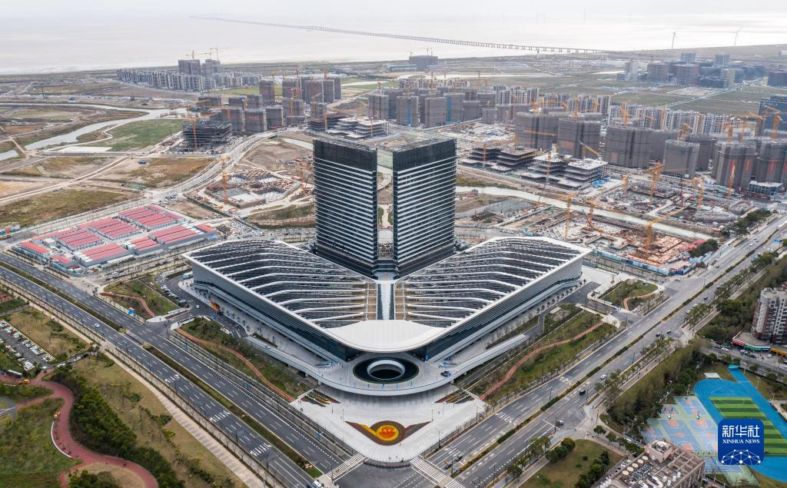
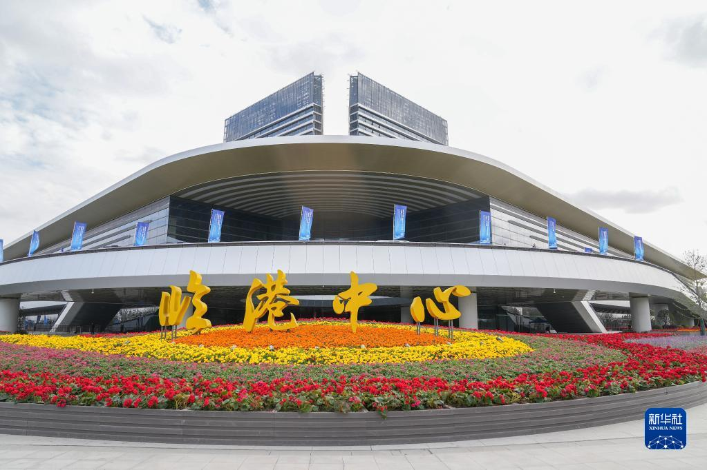

世界顶尖科学家论坛永久会址——临港中心，10月4日无人机航拍。摄影：新华社 丁汀
今天早上坐16号线，到滴水湖站，出站第一眼就觉得不对。
多了一堆穿正装、拖拉杆箱的外国人。有人边走边用英语打电话，有人在拍照，对着临港中心那两栋白色塔楼。
刷了一下新闻，才反应过来——
今天，世界顶尖科学家论坛在滴水湖边开幕了。
33位诺贝尔奖、图灵奖、沃尔夫奖、菲尔兹奖得主，以及139位资深科学家、81位青年科学家，整个周末都要在临港中心待着。
你可能还没意识到，
这件事有多大。
01
这是上海每年最不该错过的三天
顶科论坛从2018年开始办，前几年在上海科技馆、临港中心轮着来。2022年起，永久落在临港。每年10月底，这帮"诺奖天团"都会飞一趟上海。
今年的阵容是迄今最硬的一次：7位诺奖得主、3位图灵奖得主、10位世界顶尖科学家奖获奖者。连两次拿过诺贝尔化学奖的巴里·夏普利斯都来了——老爷子80多岁了，去年刚在上海领过奖。
而且第一次，产业界的人也坐到了主桌。宁德时代的曾毓群要和2025年诺贝尔化学奖得主奥马尔·亚吉、菲尔兹奖得主洛朗·拉福格一起上台演讲。以前顶科论坛都是"纯学术"，今年产业第一次真正走进来——这是信号。
02
中国人第一次拿顶科奖，是什么奖？
顶科奖是论坛自己设的，分量和诺奖差不多，每年评一次。今年的结果9月就出来了，最让人激动的一件事：邵峰，成为顶科奖创办以来第一位中国籍获奖者。
他和袁钧瑛、王晓东、维什瓦·迪克西特一起拿的是"生命科学或医学奖"，四个人研究的是程序性细胞死亡的分子机制——说人话就是，搞清楚细胞是怎么"自己结束自己"的。这件事听起来很干，但脓毒症、自身炎症、神经退行性病变甚至癌症的治疗都跟它直接相关。
更有意思的是新设的"青年科学家奖"，6位得主里5位是华人。其中有个叫吴佳俊的年轻人，研究的是"物理真实的世界模型"——直白说就是让机器真正理解世界，跟机器人、自动驾驶直接相关。还有谢伟迪，把AI用到了罕见病诊断上，已经在临床上用起来了。
03
论坛这三天，他们到底聊些啥？
主题是"范式变革：科学突破的下一个十年"。六个平行论坛，分别对应六大前沿——未来半导体、人工智能、生物医药、空天信息、未来能源、量子科学。
光AI那个分会场，就会图灵奖得主杰克·唐加拉、马丁·赫尔曼，还有寒武纪创始人陈云霁到场。他们聊的不是"GPT好用不好用"，是AI下一个十年该怎么造——从芯片到伦理，全链条。
论坛还设了四个主题活动：青年科学家大会、女科学家大会、未来科学家大会（面向青少年）、顶尖孵化器大会。明天（10月31日）开幕式下午，开幕式就将颁发顶科奖。
04
为什么选在滴水湖边？
这个问题我问过几个朋友，有人说"因为临港空"，有人说"政策支持"。都不完整。
临港中心不是个普通会议室。2022年11月永久会场启用的时候，新华社用了一个词："科学自由港"。它旁边连着科学公园、海智国际研发社区、上海天文馆、上海海事大学——一个从"会场"延伸到"城市"的完整链条。

临港中心正门。摄影：新华社 丁汀
今年论坛还配套了四条科技参访路线——同济大学的智能网联汽车测评基地、国家蛋白质科学研究（上海）设施、上海天文馆、长电科技汽车电子。科学家们开完会，转个弯就去看上海的硬核科技设施了。这就是"科学自由港"的意思：开会在这儿，研究也在这儿，产业转化也在这儿。
05
最后说两句实在的
顶科论坛的主论坛和很多平行论坛是不对外开放的。但有几个你可以凑凑热闹：
论坛前后四天的科技参访面向公众开放部分名额；"顶科HUB"分享区免费，同期有青年科学家海报长廊和产学研对接；闭幕式还会有刘徽展临展——用古籍和数字装置讲中国古代数学。
还有一件事值得留意：明年2027年是顶科论坛的第十年。今年闭幕式上要正式发出设立常设性国际组织的倡议——也就是说，这三天的"年会"可能要变成一个常驻上海的国际平台。
一个城市的格局，
藏在它愿意接下的那几天里。
周末如果有空，坐16号线去滴水湖走走。从湖岸望向临港中心那两栋白色塔楼，你会意识到——
就在那里面，33位诺奖得主正在聊人类科学的下一个十年。
对了，今年顶科论坛的开幕式是10月31日（明天）上午。邵峰的顶科奖颁奖就在那儿。有兴趣的可以留意官方直播。
2026世界顶尖科学家论坛
时间：10月30日（今天）—11月1日（周日）
地点：上海临港中心（世界顶尖科学家论坛永久会址）
主题：范式变革：科学突破的下一个十年
重点关注：10月31日上午开幕式暨颁奖典礼（邵峰等顶科奖得主亮相）
公众活动：顶科HUB分享区（免费）、科技参访路线（部分开放报名）
— END —